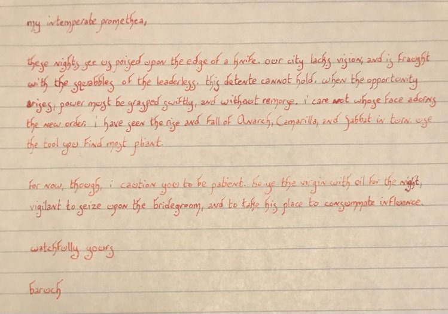

Calliope
| Brujah | |
| 1 | |
| Fledgling (13th Generation) | |
| 6 | |
| Anarch | |
| , |

To-Do
- Ambition & Desire
Ambition and Desire are related, but not identical. Think of Ambition as a long-term goal: an aspiration (if you still breathed), a life’s dream (if you still dreamed, or had life). By contrast, Desires are more immediate: short-term wishes for revenge, satisfaction, or satisfaction through revenge.
Ambition
A character’s Ambition keeps them acting and moving both night by night and in the chronicle. It provides motivation for the player and story hooks for the Storyteller. An Ambition must be measurable in game terms (“My Ambition is to achieve Humanity 10”) or a concrete achievement in the world of the chronicle (“My Ambition is to liberate Chicago from the Camarilla”). An Ambition is not something vague like “end racism” or “achieve world peace,” but instead focuses on something specific, like “bring True Death to (insert notably racist elder from your chronicle here)” or “end the Gehenna War in the Ukraine.” If an Ambition is unlikely to happen or would end the chronicle if achieved, it can still provide rich story juice – it only needs to be theoretically achievable. If a character achieves their Ambition and the chronicle continues, the player should decide on a new Ambition, ideally one that has emerged during play or one that follows on the realization that their first Ambition left something undone or incomplete.
At the end of a session in which the character has actively worked toward their Ambition, they recover one point of Aggravated Willpower damage.
Desire
Desire reflects less than lifelong Ambition, but more than momentary wants. Each session, a character can select a Desire or keep their unfulfilled Desire from the previous session. Once per session, when the character definitively acts to further or accomplish their Desire, they may immediately recover one point of Superficial Willpower damage. Since Desires change so rapidly, you don’t need to write them on your character sheet. Just write your current Desire on an index card or Post-it Note where both you and the Storyteller can see and remember it. This mechanic intentionally provides players with an incentive for character action rather than
passively waiting for the plot or turtling up defensively. Thus, a good Desire connects in some way to the outside world. One rule of thumb: if it doesn’t involve someone or something named on the Relationship Map, it’s not worth considering as a Desire. By that metric, “I want to drive a cherry Maserati” or “I want to eat a brunette” fail as Desires, but “I want to drive Cytherea’s cherry Maserati” or “I want to eat Lord Harkness’ brunette” make excellent Desires. The Storyteller should judge whether Desires involving fellow player characters fall under the spirit of encouraging meaty interaction or of just lazily trying to sponge free Willpower.
- Fast walker, keep up and get out of my way.
- Superstitious about walking under ladders, etc.
- She is rumored to have massacred a gang for interrupting a smoke with an initiation.
- I wasn't hungry, but you were upsetting me.
GM To-Do
- Ana
Someone from the church who is part of the corruption that overrun it, but was a friend of mine in life?
Session Notes


Claire wants to rebuild clan Tremere/Cam and is focused on restoring her clan.
- Maybe Calliope helps her even though it's a different clan?
- Callie's love of community supersedes the separation of the clans?
- Baroch doesn't care who is in power so long as I help seize it?
Character Notes
- abandoned by mother and has strong connections to her father.
- Father was someone important in the city.
- He is responsible for building many of the educational institutions and safe havens (orphanages, libraries, schools, hospitals)
- Callie was raised with strong faith and strong bonds to the church.
- People have twisted the teachings to fit their own agenda.
- Churches have become money hungry and began excluding populations of people marking them as weak or less-than.
- In an attempt to find her own way and unite others something happened and she was turned?
- Quick tempered. Fast walker and talker.
- Superstitious.
- Possible rumor - she once massacred a gang for interrupting an initiation. We don't know if it's true or not.
- Connected to Jerome "The Bank" and the pack of Gangrel.
History
Anarch
Ambition
To restore the churches in the city to the feeling of real community and safe haven (as opposed to the corruption they are under today).
Maybe vampires and humans?
Desire
To find Elua and see if he is OK.
Convictions & Touchstones
T: Callie's father who built many of the libraries in the city as a promise to her that she would always have a place of solace after her mother abandoned them.
C: Always keep your sworn word.
T: Preacher Elua, who always taught her to value the lives of others.
C: Protect the innocent.
Lore Notes
Archetype: Voice of the People
The Brujah have always strived for progress in Kindred society. Many of them were progressives in life and
follow the same path in undeath. The voice of the people might be a former feminist activist, eco-warrior,
or an anti-capitalist protester who channels their passion into speaking out against the Ventrue and Toreador
or fomenting political unrest among mortals. Their ambitions may come back to hurt their clan, but sometimes they form the core of revolutionary movements.
Domain
Chasse (3): See shaded section of map for permitted hunting ground. Default hunting Difficulty is 4.
Lien (0): No modifier to interactions with native mortals or for finding/investigating within domain.
Portillon (3): This Trait describes how secure the domain is against intrusion or disruption: other vampires, mortal police or predators, the Second Inquisition, etc. Each dot of Portillon subtracts one die from a foe’s pool when they attempt to, for example, enter, investigate, or surveil the domain without the coterie’s knowledge. Portillon seldom adds to character pools; it primarily acts as a resistance Trait. A critical success by an intruder might lower the Portillon of the Domain against that specific intruder – unless the coterie deals with them before the next incursion. Portillon does not apply to Havens, in or out of the Domain.
Haven
Comte Cioran's Crypt, Cimetière de l'Hôpital-Général de Québec
The mausoleum your coterie guarded was for Comte Cioran, an Anarch Brujah who was immensely powerful throughout the twentieth century and ruled Quebec City (and held sway over much of Quebec), keeping independent and holding off all comers, including werewolves, Sabbat, and Camarilla.
The events leading to his torpor are contradictory, but the guarding of his tomb became a priority for all factions; those who honored his memory wished to prevent a true death or diablerie, and those who feared his return wished to ensure he remained in torpor.
When he arose, it was with a single-mindedness that led him to the Levant and the rumored location of the Antediluvian founder of the Brujah; leaving the crypt complex a hollow shell.
Supernature abhors a void, and of late you have been accumulating evidence that this haven now also hosts a wraith or revenant, but you have as yet avoided direct confrontation and have been unable to expel it.
Postern (2): Your Haven has a rear exit, secret tunnel, grating in the cellar leading into the sewers, or other unobtrusive way out. For each dot of this Merit, add one die to your dice pools to evade or escape surveillance near your haven.
Warding (2): Your haven possesses some kind of magical ward barring supernatural forces. You may not be able to de activate it, but it allows you to pass. Discuss the limits of your ward with the Storyteller. Each dot of this Merit adds one to the dice pool to resist supernatural scrying, as well as whatever other entry the Storyteller allows it to prevent. The Storyteller may require you to possess Occult 3 or better, or Blood Sorcery, to buy this Merit.
Flaw: (••) Haunted. Your haven has a supernatural manifestation in it that you do not control or really even understand. It might just have a ghost, but a Haunted haven could hold a dimensional portal, a cursed meteorite, or anything else you can’t get rid of. Obviously, someone who does understand the manifestation could use it to breach your haven’s security. The Storyteller defines any other effect of the haunting, imposing at least a one-die penalty to affected pools used in the haven per dot of Haunted taken as a Flaw.
Humanity 6
Hey, people die; stuff breaks. You have little difficulty with the fact that you need blood to survive and that you do what needs to be done to get it. You might not go out of your way to wreck things or kill people, but you don’t cry bloody tears over it either. Not automatically horrid, Kindred at this stage of Humanity don’t win any prizes for congeniality either.
Rules for this level of Humanity work as the previous rating unless otherwise noted, as the human mask
becomes more difficult to wear:
- You must make a Rouse Check to use Blush of Life.
- You cannot have sexual intercourse per se, but you can fake it by winning a Dexterity + Charisma test
if you wish, made at a one-die penalty to your pool (Difficulty equals your partner’s Composure or
Wits).
- Even when using Blush of Life, you need make a Composure + Stamina test (Difficulty 3) to be able
to keep food and drink down for an hour.
Predator Type: Alleycat
A combative assault-feeder, you stalk, overpower, and drink from whomever you can, when you can. You may or may not attempt to threaten or Dominate victims into silence or mask the feeding as a robbery. Think about how you arrived at this direct approach to feeding and what makes you comfortable with an unlife of stalking, attacking, feeding, and escaping. You could have been homeless, an SAS soldier, a cartel hit-man, or a big-game hunter.
Blood Potency 1
You are a true vampire, though only barely so according to some elders. Still, your vampiric Blood can accomplish some spectacular things when roused.
Add one Attribute die to your dice pool when performing a Blood Surge (p. 218).
When Mending Damage, you can remove 1 point of Superficial damage per Rouse Check.
Roll two dice and pick the highest when rolling a Rouse Check for level 1 discipline powers. (Or re-roll the Rouse Check)
You have a Bane Severity of 1.

Blush of Life
Unless intentionally brought to a semblance of life, the body of a vampire is functionally dead. Undeath signifies its presence in pale or ashy skin, cold flesh, and lack of breath (except to speak) or a heartbeat. By sending their Blood through the dead capillaries of their skin and into their shriveled heart, a vampire can appear completely human for a night, including but not limited to a heartbeat, body temperature, and breath. The vampire can even pass a cursory medical examination, though they still fail more intrusive screenings for minute tells such as the absence of intestinal flora.
Non thin-blooded vampires must use Blush of Life to use touch screens – such as those on smart phones – unaided, which don’t work without the skin moisture and conductivity of the living. Blush of Life generally allows a vampire to consume food and drink without vomiting for up to an hour. Without it, vampires must make an immediate Composure + Stamina test (Difficulty 3) to be able to get outside or to a bathroom in time.
Depending on their Humanity, vampires can fake or sometimes even enjoy sexual intercourse while Blush of Life is active (see p. 236.) At Humanity 9 or higher, vampires appear ill or “heroin chic” rather than dead; their heartbeat, pulse, and breath seem thready but detectable. They do not need to use Blush of Life for other than cosmetic purposes. Bringing on the Blush of Life requires a Rouse Check.
Blood Surge
Any vampire can call upon their Blood to temporarily augment their Attributes, whether Physical, Social, or Mental. When the character wills a Blood Surge, the player can add a number of dice to a dice pool incorporating an Attribute. The number of dice a Blood Surge adds depends on the character’s Blood Potency; characters can only use Blood Surge once per roll. A Blood Surge requires a Rouse Check.
Blood Surge applies only to a single roll of the dice. (Dice added in a Blood Surge remain throughout
any Willpower re-rolls.) Characters cannot use a Blood Surge for Willpower or Humanity rolls, for rolls that apply to more than one scene, in One-Roll Combat (p. 296), or whenever else the Storyteller disallows them. Do not apply automatic wins (p. 120) or “Take Half” to rolls augmented
by a Blood Surge.
Vampiric Mending
Being dead, vampires do not heal naturally. Their unliving frames can still knit themselves together, given enough effort.
Mending superficial health damage
Depending on their Blood Potency, a vampire can mend one or more points of Superficial Health damage with a single Rouse Check. Vampires can make one Rouse Check per turn to mend Superficial Health damage.
Mending aggravated health damage
To mend Aggravated Damage, a vampire must wait until the next nightfall and make three Rouse Checks, in addition to the regular Rouse Check made when rising.
This process removes one point of Aggravated damage as well as one Crippling Injury or similar impairment. A vampire can only mend one point of Aggravated damage per night.
As with awakening, if these Rouse Checks raise the vampire’s Hunger above Hunger 5, they fall into torpor rather than testing for hunger frenzy.
Advantages
Merits
- Criminal Contacts (3)
- Unbondable (5): You cannot be Blood Bound. If you’re ever short of cash, you can probably sell your vitae to alchemists, too.
- Iron Gullet (2): You can feed from cold blood, rancid blood, and fractionated plasma. None of these provide Resonances. Ventrue may not take this Merit.
- Boot & Rally (1): Sometimes the best way out of a bad situation is to try again, harder, and have a frenzy-prone coteriemate impress upon you the error of your ways. Once per session, the Brujah inspires a flagging coteriemate, who may then reroll all regular dice on a failed Physical Skill test.
Flaws
- Prey Exclusion (1) - refuse to hunt/feed on women. You refuse to hunt a certain class of prey: drug users, women, children, policemen, innocents, a given minority or ethnic group, etc. If you feed on such prey, you gain Stains as though you had violated a chronicle Tenet. Witnessing other Kindred feeding on the object of your exclusion without interfering might also give Stains, at the Storyteller’s discretion. Ventrue with this Flaw gain an additional restriction, making their choice of vessels extremely narrow.
- Suspect (Camarilla) You’re not good with this sect at all. You weaseled out of a boon, broke an oath, or did something similar. You can try to stay out of sight and out of mind, but unless you somehow make amends, you suffer a two-dice penalty to all Social tests involving the offended faction.
Clan Bane
The Blood of the Brujah simmers with barely contained rage, exploding at the slightest provocation. Subtract dice equal to the Bane Severity of the Brujah from any roll to resist fury frenzy. This cannot take the pool below one die.
Clan Compulsion
Rebellion - The vampire takes a stand against whatever or whomever they see as the status quo in the situation, whether that’s their leader, a viewpoint expressed by a potential vessel, or just the task they were supposed to do at the moment. Until they’ve gone against their orders or expectations, perceived r real, the vampire receives a twodice penalty to all rolls. This Compulsion ends once they’ve managed to either make someone change their minds (by force if necessary) or done the opposite of what was expected of them.
Disciplines
Vampires add dice equal to half their Blood Potency (rounded down) to their dice pools to use or resist Disciplines.
Potence (3)
Type: Physical
Masquerade threat: Medium to high. Lesser exercises of the
Discipline might be passed off as “hysterical strength,” but once pavement cracks and buildings start to crumble that explanation loses what little credibility it had.
Blood Resonance: Choleric. The strong and healthy; athletes
and young men and women in their prime, gym rats, wrestlers,
construction workers and lumberjacks, longshoremen.
Lethal Body
Using this power, the user is capable of causing horrendous damage to mortals, tearing skin and breaking bones with bare fingers.
Cost: Free
System: The user’s unarmed attacks can now do Aggravated
Health damage to mortals, if desired. They also ignore one level of armor per Potence level of the user.
Duration: Passive
Prowess
Vampires with Potence gain far greater strength from their Blood than those who lack it.
Cost: One Rouse Check
System: When activated, add the Potence rating of the user
to their unarmed damage value as well as to feats of Strength.
Duration: One scene
Spark of Rage
Amalgam: Presence 3
Combining Potence and Presence, the vampire can incite anger and even frenzy in onlookers, as easily as awe or dread. The user must take care not to rile up an angry mob to turn on them rather than the target or each other.
Cost: One Rouse Check
Dice Pools: Manipulation + Potence
System: When active, the user can add their Potence rating
to any attempt to rile or incite a person or a crowd to violence. In addition, the user can activate this power and roll a contest of Manipulation + Potence vs Composure + Intelligence of another vampire. If they win, the opposing vampire must make a fury frenzy test at Difficulty 3.
Duration: One Scene
Presence (3)
Type: Mental
Masquerade threat: Low-Medium. A subtle power, people seldom realize Presence has affected them at all. As with most Disciplines, its higher powers can leave puzzled witnesses behind, especially once the effects wear off.
Blood Resonance: Sanguine. The beautiful and lustful, those completely infatuated with the vampire, models and actors and movie stars, compelling public and private speakers from politicians to car salesmen, YouTube sensations and Instagram influencers.
Awe
Anyone in the presence of the vampire finds their attention
inexplicably drawn to them. Those listening to the vampire speak might suddenly agree on subjects where they once held different viewpoints. While this power doesn’t cause rapt infatuation, it is still strong enough to sway the minds of most mortals.
Cost: Free
Dice Pools: Manipulation + Presence vs Composure + Intelligence
System: Add the Presence rating to any Skill roll involving
Persuasion or Performance as well as to other Charisma related rolls, at the Storyteller’s discretion. Anyone aware that they’re being affected can try to resist with a contest of Composure + Intelligence vs the user’s Manipulation + Presence. On a win, the target can resist the effects for one scene; a critical win makes the target immune for the entire night. Once the power wears off, victims revert to their previous opinions.
Duration: One scene or until intentionally ended
Daunt
Instead of attracting people, the vampire uses Presence to repel. With this power the user appears threatening and exudes an aura of menace powerful enough to make most mortals avoid their attention and even vampires think twice
about acting against them.
Cost: Free
System: Add the user’s Presence rating to any Intimidation rolls. Attacking the user requires a Resolve+Composure
roll at Difficulty 2. Vampires cannot use Awe and Daunt simultaneously.
Duration: One scene or until intentionally ended
Dread Gaze
Briefly exposing their vampiric nature, the user instills a single subject with utter terror. Mortals are cowed, run, or freeze with fear, while other vampires either submit like whipped dogs or flee in frenzied Rötschreck.
Cost: One Rouse Check
Dice Pools: Charisma + Presence vs Composure + Resolve
System: Displaying their fangs, their face twisted in a predatory grimace, the user rolls a contest of Charisma + Presence against their target’s Composure + Resolve.
Failure: Mortals are unable to act other than in their own defense, backing off for a turn. Vampires are unaffected.
Win: Mortals run in fear. Vampires are unable to act other than in their own defense for a turn unless they spend Willpower equal to the users margin of win (to a minimum of one).
Critical Win: Mortals freeze or crumple into a fetal position. Vampires must make a terror frenzy test (Difficulty 3). If they
win, they are still affected as above.
Duration: One turn